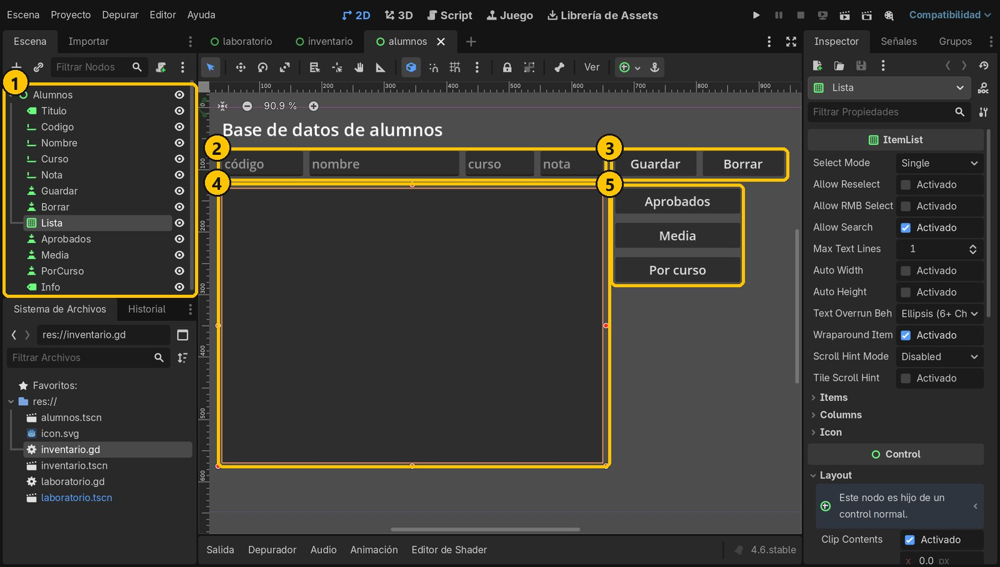
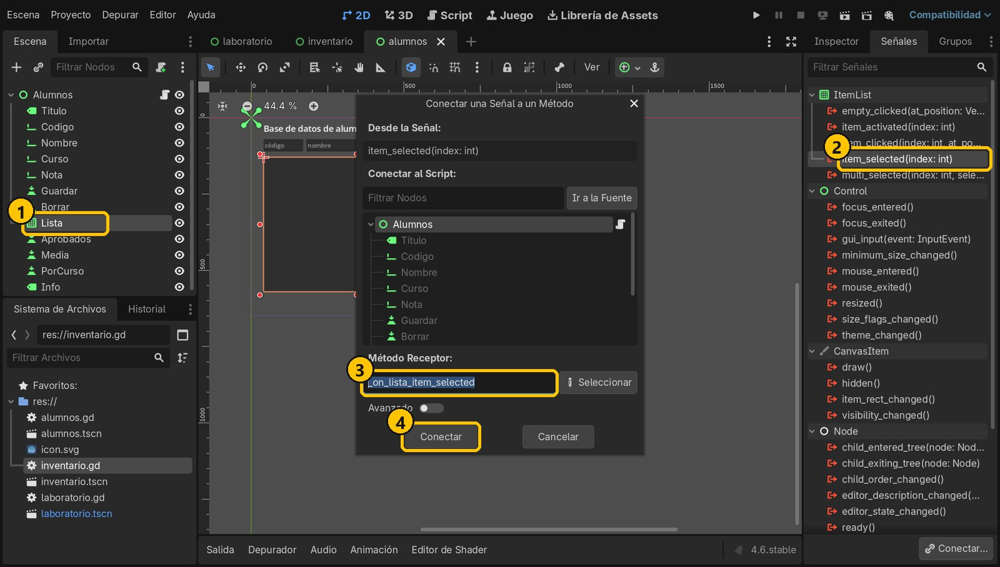
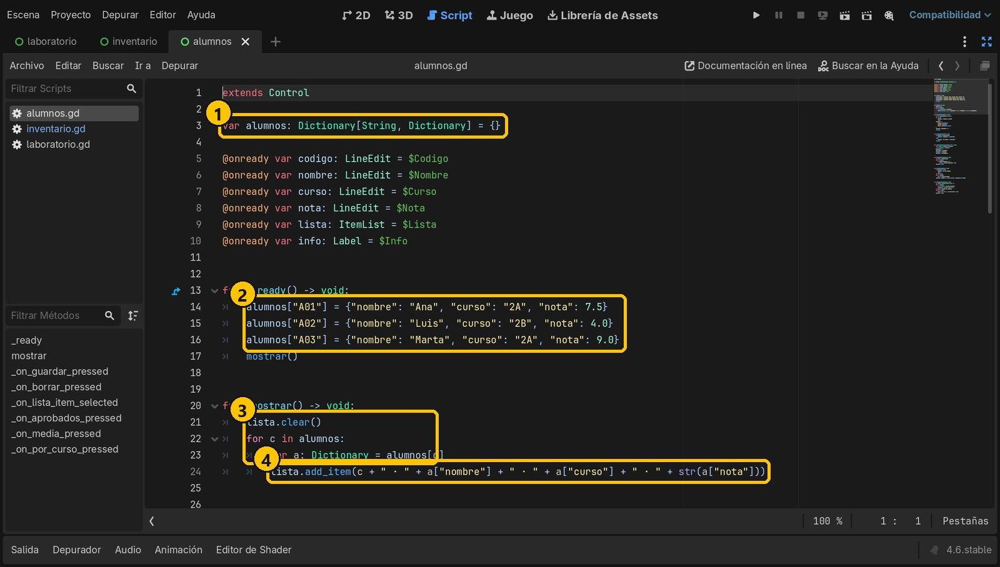
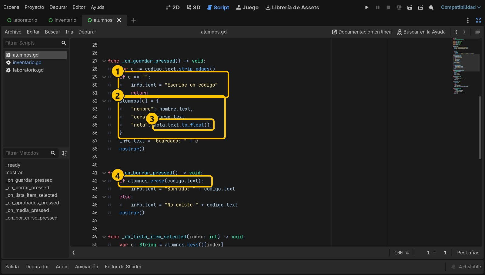
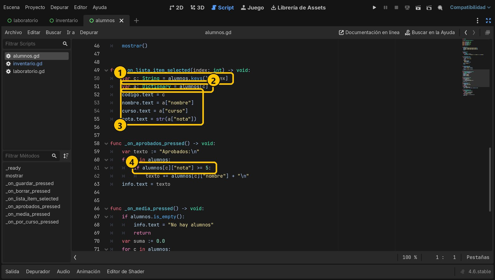
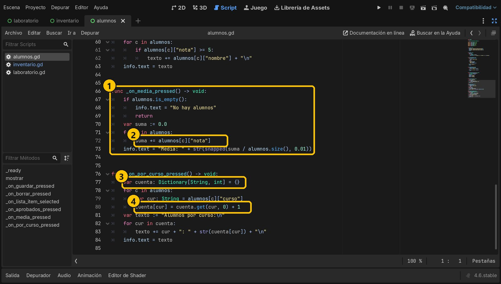
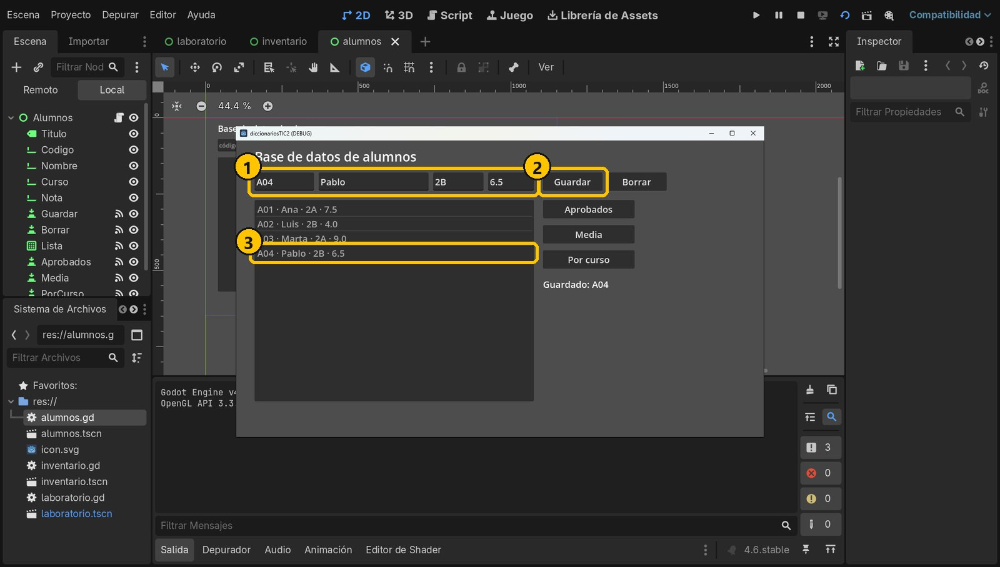
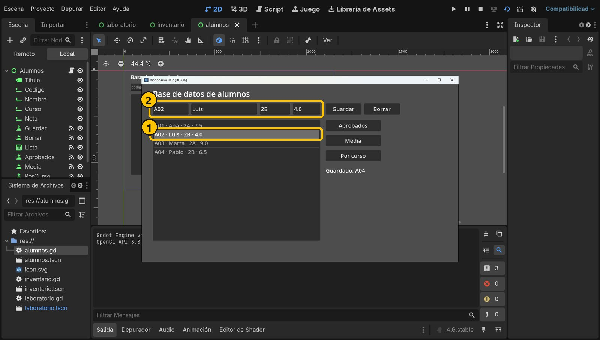
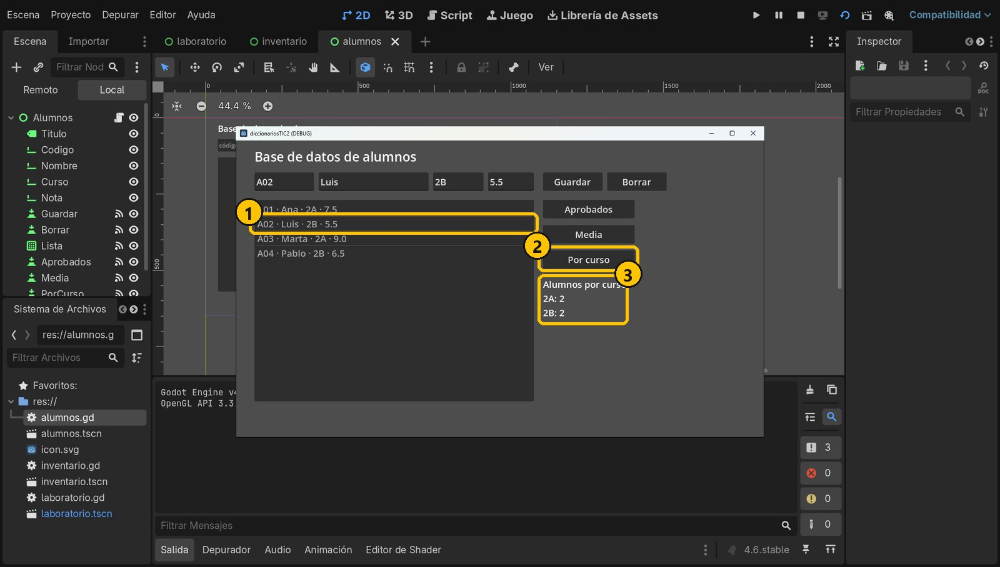
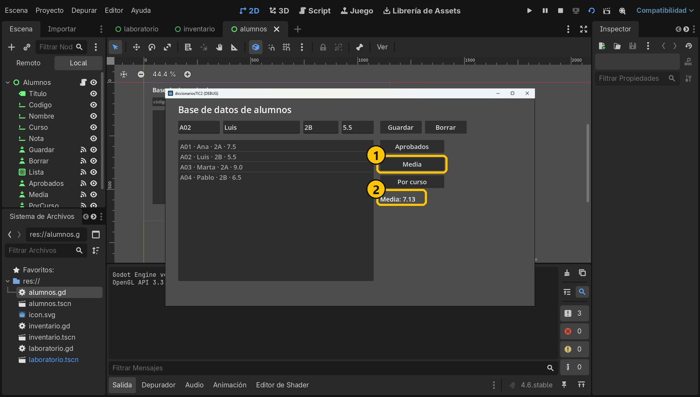

Objetivo
Al terminar tendrás una pequeña base de datos: das de alta y editas alumnos con un formulario, los ves en una lista, los seleccionas y haces consultas (aprobados, media y alumnos por curso).
Partimos de: El proyecto de la práctica 2. Añadimos una escena nueva, alumnos.tscn.
Conceptos clave
Dictionary[String, Dictionary]Cada clave (el código) guarda otro diccionario: la ficha del alumno.
alumnos[c]["nota"]Dos corchetes: primero el alumno, luego el campo de su ficha.
ItemList + item_selectedLista de filas; la señal avisa con el índice de la fila pulsada.
get(clave, 0) + 1Un diccionario contador: suma 1 aunque la clave aún no exista.
Paso a paso
1Crea la interfaz
Escena nueva con un Control Alumnos (alumnos.tscn). Dentro: cuatro LineEdit para el formulario (Codigo, Nombre, Curso, Nota), los botones Guardar y Borrar, un ItemList llamado Lista, tres botones de consulta (Aprobados, Media, PorCurso) y un Label Info con Autowrap Mode activado.

- 1Los nodos
- 2Formulario
- 3Guardar y Borrar
- 4ItemList Lista
- 5Consultas
2Script y señales
Añade el script res://alumnos.gd (hereda de Control). Conecta pressed de los cinco botones y, en Lista, la señal item_selected(index): avisa cuando pulsas una fila y te da su número.

- 1Lista
- 2item_selected
- 3_on_lista_item_selected
- 4Conectar
3Diccionario de diccionarios
La clave es el código; el valor, otro diccionario con nombre, curso y nota. En _ready() creamos tres alumnos de ejemplo. mostrar() vacía la lista y añade una fila por alumno con add_item().
extends Control
var alumnos: Dictionary[String, Dictionary] = {}
@onready var codigo: LineEdit = $Codigo
@onready var nombre: LineEdit = $Nombre
@onready var curso: LineEdit = $Curso
@onready var nota: LineEdit = $Nota
@onready var lista: ItemList = $Lista
@onready var info: Label = $Info
func _ready() -> void:
alumnos["A01"] = {"nombre": "Ana", "curso": "2A", "nota": 7.5}
alumnos["A02"] = {"nombre": "Luis", "curso": "2B", "nota": 4.0}
alumnos["A03"] = {"nombre": "Marta", "curso": "2A", "nota": 9.0}
mostrar()
func mostrar() -> void:
lista.clear()
for c in alumnos:
var a: Dictionary = alumnos[c]
lista.add_item(c + " · " + a["nombre"] + " · " + a["curso"] + " · " + str(a["nota"]))
- 1String → Dictionary
- 2Tres fichas
- 3Recorrer
- 4Una fila por alumno
4Guardar y Borrar
Guardar crea la ficha con los datos del formulario y la guarda con el código como clave. to_float() pasa la nota de texto a número. Si el código ya existía, la ficha se sustituye: el mismo botón sirve para dar de alta y para editar.
func _on_guardar_pressed() -> void:
var c := codigo.text.strip_edges()
if c == "":
info.text = "Escribe un código"
return
alumnos[c] = {
"nombre": nombre.text,
"curso": curso.text,
"nota": nota.text.to_float(),
}
info.text = "Guardado: " + c
mostrar()
func _on_borrar_pressed() -> void:
if alumnos.erase(codigo.text):
info.text = "Borrado: " + codigo.text
else:
info.text = "No existe " + codigo.text
mostrar()
- 1Sin código, no
- 2La ficha
- 3Texto → número
- 4Baja
5Seleccionar y ver aprobados
keys() devuelve las claves en el mismo orden en que se añadieron, que es el orden de la lista: con el índice de la fila sacamos el código y, con él, la ficha. Para los aprobados usamos dos corchetes: alumnos[c]["nota"].
func _on_lista_item_selected(index: int) -> void:
var c: String = alumnos.keys()[index]
var a: Dictionary = alumnos[c]
codigo.text = c
nombre.text = a["nombre"]
curso.text = a["curso"]
nota.text = str(a["nota"])
func _on_aprobados_pressed() -> void:
var texto := "Aprobados:\n"
for c in alumnos:
if alumnos[c]["nota"] >= 5:
texto += alumnos[c]["nombre"] + "\n"
info.text = texto
- 1El código de la fila
- 2Su ficha
- 3Rellenar formulario
- 4Dos corchetes
6Media y alumnos por curso
La media suma las notas y divide entre size(). Para contar por curso usamos otro diccionario como contador: get(cur, 0) devuelve 0 si el curso aún no está.
func _on_media_pressed() -> void:
if alumnos.is_empty():
info.text = "No hay alumnos"
return
var suma := 0.0
for c in alumnos:
suma += alumnos[c]["nota"]
info.text = "Media: " + str(snapped(suma / alumnos.size(), 0.01))
func _on_por_curso_pressed() -> void:
var cuenta: Dictionary[String, int] = {}
for c in alumnos:
var cur: String = alumnos[c]["curso"]
cuenta[cur] = cuenta.get(cur, 0) + 1
var texto := "Alumnos por curso:\n"
for cur in cuenta:
texto += cur + ": " + str(cuenta[cur]) + "\n"
info.text = texto
- 1Media
- 2Sumar notas
- 3Contador
- 4get(cur, 0) + 1
7Ejecuta y da de alta
Ejecuta con F6. Escribe A04, Pablo, 2B, 6.5 y pulsa Guardar: aparece en la lista.

- 1A04 Pablo 2B 6.5
- 2Guardar
- 3Nueva fila
8Selecciona y edita
Pulsa la fila de Luis: el formulario se rellena con su ficha.

- 1Fila de Luis
- 2Se rellena
9Cambia la nota y consulta
Cambia su nota a 5.5 y pulsa Guardar: la ficha se sustituye. Pulsa Por curso: 2 alumnos en 2A y 2 en 2B.

- 1Luis: 5.5
- 2Por curso
- 3El recuento
10La media
Pulsa Media: 7.13. Prueba también Aprobados.

- 1Media
- 27.13
Resumen
- Un diccionario puede guardar otros diccionarios.
- La clave te lleva directo a cada ficha:
alumnos[c]["nota"]. - Con
for,gety un contador haces consultas.
Si algo falla
- Al seleccionar una fila sale otro alumno. La lista y
keys()deben ir en el mismo orden: vuelve a llamar amostrar()después de cada cambio. - La nota se guarda como 0.
to_float()necesita punto decimal: escribe6.5, no6,5. - Error al leer
a["nombre"]. Revisa que los nombres de los campos coinciden en todas partes ("nombre","curso","nota").
Prueba tú
- Añade un LineEdit de búsqueda y un botón que muestre solo los alumnos cuyo nombre contenga ese texto (
contains()). - Muestra la nota más alta y de quién es.
- Calcula la media de cada curso con dos diccionarios: uno que sume notas y otro que cuente alumnos.